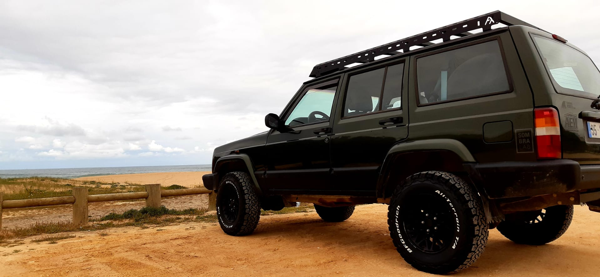
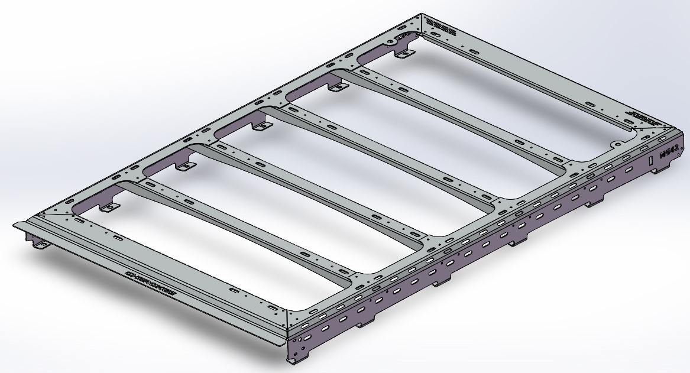
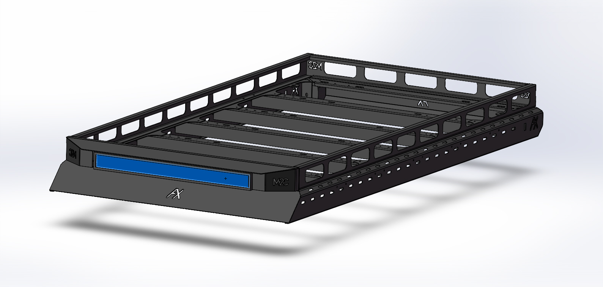
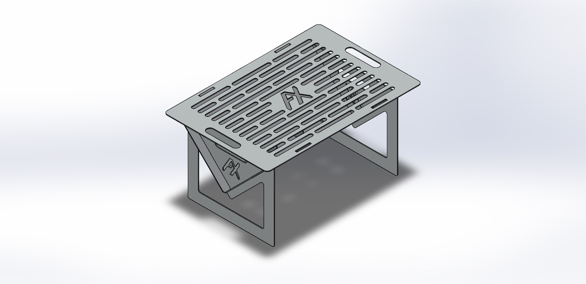

Somos adeptos de todo o terreno independentemente do veículo que seja.
Gostamos de explorar a natureza em família e com amigos.
Verdadeiros adeptos do "Do it yourself" resolvemos criar uma marca com a qual nos identificassemos.
Vamos desenvolvendo produtos à medida das nossas necessidades e das necessidades dos que nos procuram.
Tudo começou com uma necessidade...
Temos um Jeep Cherokee XJ que usamos no nosso dia a dia mas também durante as nossas férias em família.
Procurávamos uma grade de tejadilho que correspondesse às nossas expectativas do ponto de vista estético, mas sobretudo que fosse de encontro às nossas necessidades. No decorrer do ano por vezes queremos transportar as nossas bicicletas e nas férias precisamos de recorrer à mala de viagem. Temos ainda o desejo de experimentar um fim de semana em overlanding.
Como não encontrámos no mercado uma grade que oferecesse a resistência que procurávamos e com uma estética que nos enchesse as medidas, resolvemos criar uma que fosse de encontro ao que tinhamos idealizado.
Os produtos iniciais foram as grades de tejadilho personalizadas. Primeiro a nossa, para o nosso XJ, e depois para o Toyota Land Cruiser de um amigo. Estamos a pensar desenvolver 2 modelos universais nos próximos tempos, mas para já estamos mais focados na idealização de grades customizadas adaptadas às necessidades e gostos pessoais de cada um.
 As grades são produzidas em ferro reforçado, sendo depois ser lacadas à cor pretendida, dentro do RAL disponível, claro.
O segundo produto a ser projetado e testado foi o grelhador em inox. Trata-se de um grelhador em inox de 2 mm totalmente desmontável para ocupar o mínimo espaço possível.

Queremos ainda personalizar a tampa do combustível e depois disso contamos convosco para que nos indiquem quais as vossas necessidades.